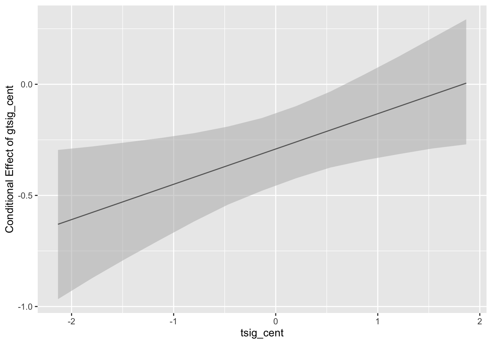

5 Random Slope Models
Data for this chapter: lq2002.csv
This week, we are going to continue using data from Gavin and Hofmann (2002), a study on organizational climate and attitudes published in Leadership Quarterly. Here, we have individual soldiers nested within companies. This is the same dataset that Garson uses in Chapter 7, so you can recreate his analysis.
Every model so far has assumed that a predictor relates to the outcome the same way in every company. The slope was fixed; only the intercept was allowed to vary. This chapter relaxes that assumption.
5.1 Load some packages to help with the analysis and data management
suppressPackageStartupMessages() hides the loading banners these packages print. Those messages are informative the first few times, particularly the tidyverse conflict list, and clutter after that.
5.2 Load and explore the data
Rows: 2,042
Columns: 28
$ ROWID <dbl> 1, 2, 3, 4, 5, 6, 7, 8, 9, 10, 11, 12, 13, 14, 15, 16, 17, 18…
$ COMPID <dbl> 2, 2, 2, 2, 2, 2, 2, 2, 2, 2, 2, 2, 2, 2, 2, 2, 2, 2, 2, 2, 2…
$ SUB <dbl> 1, 2, 3, 4, 5, 6, 7, 8, 9, 10, 11, 12, 13, 14, 15, 16, 17, 18…
$ LEAD01 <dbl> 2, 4, 4, 1, 1, 2, 3, 3, 3, 4, 2, 2, 4, 4, 1, 2, 4, 4, 4, 4, 4…
$ LEAD02 <dbl> 2, 4, 4, 1, 1, 3, 2, 3, 4, 3, 4, 3, 4, 4, 1, 1, 5, 4, 5, 4, 2…
$ LEAD03 <dbl> 2, 2, 2, 1, 1, 2, 2, 2, 3, 3, 1, 1, 4, 4, 1, 2, 3, 4, 1, 4, 2…
$ LEAD04 <dbl> 3, 4, 4, 1, 1, 4, 1, 4, 2, 4, 3, 1, 4, 4, 1, 4, 5, 4, 1, 5, 1…
$ LEAD05 <dbl> 2, 4, 2, 1, 3, 2, 2, 2, 3, 3, 1, 2, 4, 4, 1, 3, 3, 4, 1, 2, 2…
$ LEAD06 <dbl> 2, 4, 4, 1, 2, 4, 2, 2, 3, 4, 3, 4, 4, 4, 1, 3, 5, 4, 4, 2, 2…
$ LEAD07 <dbl> 5, 4, 4, 4, 1, 3, 2, 2, 3, 3, 3, 1, 4, 3, 1, 5, 3, 4, 1, 3, 2…
$ LEAD08 <dbl> 5, 4, 4, 2, 1, 4, 2, 4, 1, 4, 4, 3, 4, 4, 1, 2, 5, 4, 1, 3, 2…
$ LEAD09 <dbl> 5, 4, 4, 3, 1, 2, 3, 2, 3, 3, 2, 2, 4, 4, 1, 4, 1, 4, 1, 4, 2…
$ LEAD10 <dbl> 5, 4, 4, 3, 1, 4, 4, 2, 2, 4, 3, 2, 4, 4, 1, 2, 5, 4, 4, 4, 1…
$ LEAD11 <dbl> 4, 3, 2, 2, 1, 3, 2, 4, 3, 3, 2, 1, 4, 4, 1, 2, 4, 4, 1, 4, 2…
$ TSIG01 <dbl> 1, 3, 5, 1, 4, 4, 2, 2, 4, 4, 3, 3, 4, 4, 1, 1, 4, 4, 1, 5, 1…
$ TSIG02 <dbl> 5, 4, 5, 3, 4, 4, 4, 2, 3, 4, 4, 3, 4, 4, 1, 5, 4, 4, 5, 5, 4…
$ TSIG03 <dbl> 5, 3, 5, 2, 4, 4, 4, 4, 4, 4, 3, 3, 4, 4, 1, 4, 5, 4, 5, 5, 4…
$ HOSTIL01 <dbl> 0, 3, 1, 2, 2, 0, 2, 0, 0, 1, 1, 2, 0, 0, 4, 3, 1, 0, 4, 3, 4…
$ HOSTIL02 <dbl> 0, 2, 0, 1, 0, 0, 0, 0, 4, 0, 0, 2, 0, 0, 4, 0, 0, 0, 0, 1, 4…
$ HOSTIL03 <dbl> 0, 0, 0, 3, 0, 0, 1, 0, 4, 0, 0, 0, 0, 0, 4, 0, 0, 0, 4, 2, 2…
$ HOSTIL04 <dbl> 0, 0, 0, 3, 0, 0, 1, 0, 4, 0, 0, 1, 0, 0, 4, 0, 0, 0, 4, 3, 2…
$ HOSTIL05 <dbl> 0, 1, 1, 0, 0, 0, 0, 0, 4, 0, 0, 2, 0, 0, 2, 0, 0, 0, 4, 2, 3…
$ LEAD <dbl> 3.363636, 3.727273, 3.454545, 1.818182, 1.272727, 3.000000, 2…
$ TSIG <dbl> 3.666667, 3.333333, 5.000000, 2.000000, 4.000000, 4.000000, 3…
$ HOSTILE <dbl> 0.0, 1.2, 0.4, 1.8, 0.4, 0.0, 0.8, 0.0, 3.2, 0.2, 0.2, 1.4, 0…
$ GLEAD <dbl> 2.882576, 2.882576, 2.882576, 2.882576, 2.882576, 2.882576, 2…
$ GTSIG <dbl> 3.541667, 3.541667, 3.541667, 3.541667, 3.541667, 3.541667, 3…
$ GHOSTILE <dbl> 1.0416667, 1.0416667, 1.0416667, 1.0416667, 1.0416667, 1.0416…5.3 Data management tip of the week: calculating group (cluster) means
Here is something that comes up a lot in MLM. Often, you want to take an individual-level measure and calculate the cluster, or group, mean. This is “aggregating up” an individual measure to see if it is a significant predictor at level 2. We did this last week with the task significance measure (TSIG). My own sense of task significance is important, but it is probably also important to consider how my colleagues feel about their work as well.
lq2002.1 <- lq2002 %>%
group_by(COMPID) %>%
mutate(.,
glead = mean(LEAD),
gtsig = mean(TSIG),
ghostile = mean(GHOSTILE)) %>%
ungroup()
glimpse(lq2002.1)Rows: 2,042
Columns: 31
$ ROWID <dbl> 1, 2, 3, 4, 5, 6, 7, 8, 9, 10, 11, 12, 13, 14, 15, 16, 17, 18…
$ COMPID <dbl> 2, 2, 2, 2, 2, 2, 2, 2, 2, 2, 2, 2, 2, 2, 2, 2, 2, 2, 2, 2, 2…
$ SUB <dbl> 1, 2, 3, 4, 5, 6, 7, 8, 9, 10, 11, 12, 13, 14, 15, 16, 17, 18…
$ LEAD01 <dbl> 2, 4, 4, 1, 1, 2, 3, 3, 3, 4, 2, 2, 4, 4, 1, 2, 4, 4, 4, 4, 4…
$ LEAD02 <dbl> 2, 4, 4, 1, 1, 3, 2, 3, 4, 3, 4, 3, 4, 4, 1, 1, 5, 4, 5, 4, 2…
$ LEAD03 <dbl> 2, 2, 2, 1, 1, 2, 2, 2, 3, 3, 1, 1, 4, 4, 1, 2, 3, 4, 1, 4, 2…
$ LEAD04 <dbl> 3, 4, 4, 1, 1, 4, 1, 4, 2, 4, 3, 1, 4, 4, 1, 4, 5, 4, 1, 5, 1…
$ LEAD05 <dbl> 2, 4, 2, 1, 3, 2, 2, 2, 3, 3, 1, 2, 4, 4, 1, 3, 3, 4, 1, 2, 2…
$ LEAD06 <dbl> 2, 4, 4, 1, 2, 4, 2, 2, 3, 4, 3, 4, 4, 4, 1, 3, 5, 4, 4, 2, 2…
$ LEAD07 <dbl> 5, 4, 4, 4, 1, 3, 2, 2, 3, 3, 3, 1, 4, 3, 1, 5, 3, 4, 1, 3, 2…
$ LEAD08 <dbl> 5, 4, 4, 2, 1, 4, 2, 4, 1, 4, 4, 3, 4, 4, 1, 2, 5, 4, 1, 3, 2…
$ LEAD09 <dbl> 5, 4, 4, 3, 1, 2, 3, 2, 3, 3, 2, 2, 4, 4, 1, 4, 1, 4, 1, 4, 2…
$ LEAD10 <dbl> 5, 4, 4, 3, 1, 4, 4, 2, 2, 4, 3, 2, 4, 4, 1, 2, 5, 4, 4, 4, 1…
$ LEAD11 <dbl> 4, 3, 2, 2, 1, 3, 2, 4, 3, 3, 2, 1, 4, 4, 1, 2, 4, 4, 1, 4, 2…
$ TSIG01 <dbl> 1, 3, 5, 1, 4, 4, 2, 2, 4, 4, 3, 3, 4, 4, 1, 1, 4, 4, 1, 5, 1…
$ TSIG02 <dbl> 5, 4, 5, 3, 4, 4, 4, 2, 3, 4, 4, 3, 4, 4, 1, 5, 4, 4, 5, 5, 4…
$ TSIG03 <dbl> 5, 3, 5, 2, 4, 4, 4, 4, 4, 4, 3, 3, 4, 4, 1, 4, 5, 4, 5, 5, 4…
$ HOSTIL01 <dbl> 0, 3, 1, 2, 2, 0, 2, 0, 0, 1, 1, 2, 0, 0, 4, 3, 1, 0, 4, 3, 4…
$ HOSTIL02 <dbl> 0, 2, 0, 1, 0, 0, 0, 0, 4, 0, 0, 2, 0, 0, 4, 0, 0, 0, 0, 1, 4…
$ HOSTIL03 <dbl> 0, 0, 0, 3, 0, 0, 1, 0, 4, 0, 0, 0, 0, 0, 4, 0, 0, 0, 4, 2, 2…
$ HOSTIL04 <dbl> 0, 0, 0, 3, 0, 0, 1, 0, 4, 0, 0, 1, 0, 0, 4, 0, 0, 0, 4, 3, 2…
$ HOSTIL05 <dbl> 0, 1, 1, 0, 0, 0, 0, 0, 4, 0, 0, 2, 0, 0, 2, 0, 0, 0, 4, 2, 3…
$ LEAD <dbl> 3.363636, 3.727273, 3.454545, 1.818182, 1.272727, 3.000000, 2…
$ TSIG <dbl> 3.666667, 3.333333, 5.000000, 2.000000, 4.000000, 4.000000, 3…
$ HOSTILE <dbl> 0.0, 1.2, 0.4, 1.8, 0.4, 0.0, 0.8, 0.0, 3.2, 0.2, 0.2, 1.4, 0…
$ GLEAD <dbl> 2.882576, 2.882576, 2.882576, 2.882576, 2.882576, 2.882576, 2…
$ GTSIG <dbl> 3.541667, 3.541667, 3.541667, 3.541667, 3.541667, 3.541667, 3…
$ GHOSTILE <dbl> 1.0416667, 1.0416667, 1.0416667, 1.0416667, 1.0416667, 1.0416…
$ glead <dbl> 2.882576, 2.882576, 2.882576, 2.882576, 2.882576, 2.882576, 2…
$ gtsig <dbl> 3.541667, 3.541667, 3.541667, 3.541667, 3.541667, 3.541667, 3…
$ ghostile <dbl> 1.0416667, 1.0416667, 1.0416667, 1.0416667, 1.0416667, 1.0416…The above command has two parts. First, we use the group_by command from our friend, the dplyr package, to group all responses in their respective clusters/companies determined by COMPID. This is a first step to declare that all the operations that follow are to be performed at the cluster (company) level. Second, we use the mutate command, which we have used before, to create new variables that are equal to the mean of the original variables. Since we just grouped by COMPID, this means we get the mean of the variables by company.
So, we calculate new variables called glead, gtsig, and ghostile that are equal to the mean of LEAD, TSIG, and HOSTILE by company. This is actually identical to what is already calculated for us in the dataset, the variables GLEAD, GTSIG, and GHOSTILE. I just wanted to show you how to do it so you can try it on your own!
ungroup()
A grouped data frame stays grouped. Every operation after group_by() silently runs within company until you undo it, which produces results that look plausible and are wrong. ungroup() at the end of the chain is cheap insurance.
You can check whether a data frame is still grouped with groups(lq2002.1), which should return an empty list here.
Since we have computed variables that should already exist in the file, we can verify our work:
# A tibble: 1 × 2
lead_check tsig_check
<dbl> <dbl>
1 6.11e-10 5.71e-10Differences on the order of 1e-15 are floating point noise, not disagreement. Anything larger would mean the aggregation did not do what we thought.
5.4 Running random slopes models
5.4.1 Step one: run your preferred model without random slopes
Let’s assume that we ran a bunch of models with this army data (which we did, last week!), and arrived at a model that we thought best represented our data and matched our research questions. That is the model below, with a random intercept, two level-1 predictors (LEAD and TSIG), and one level-2 predictor (GTSIG). Let’s rerun that model to remind ourselves and also get measures of model fit (AIC and BIC) that we can use as we go along.
model.1 <- lmer(HOSTILE ~ TSIG + LEAD + GTSIG + (1|COMPID), REML = FALSE, data = lq2002.1)
summary(model.1)Linear mixed model fit by maximum likelihood ['lmerMod']
Formula: HOSTILE ~ TSIG + LEAD + GTSIG + (1 | COMPID)
Data: lq2002.1
AIC BIC logLik -2*log(L) df.resid
5533.7 5567.4 -2760.8 5521.7 2036
Scaled residuals:
Min 1Q Median 3Q Max
-2.3166 -0.6960 -0.2211 0.5170 3.4998
Random effects:
Groups Name Variance Std.Dev.
COMPID (Intercept) 0.009905 0.09952
Residual 0.867050 0.93116
Number of obs: 2042, groups: COMPID, 49
Fixed effects:
Estimate Std. Error t value
(Intercept) 3.40718 0.25785 13.214
TSIG -0.17234 0.02479 -6.953
LEAD -0.35177 0.02996 -11.741
GTSIG -0.27729 0.08258 -3.358
Correlation of Fixed Effects:
(Intr) TSIG LEAD
TSIG 0.105
LEAD -0.205 -0.511
GTSIG -0.942 -0.227 0.0105.4.2 Step two: add a random slope for TSIG
Now, the next logical step after testing predictors is to see whether or not any predictors should be treated as random at level-2. Here, we are going to test a random slope for TSIG. This is effectively allowing the slope of TSIG (which was overall negative) to vary according to which company a soldier is in. In some companies, that slope could now be higher, in some companies, it could be lower.
In terms of coding, to add a random slope, you just list the predictor name again after the colon. Notice now that TSIG appears twice in the code: once to the left of the ~, and once on the right side of the pipe operator (|).
model.2 <- lmer(HOSTILE ~ TSIG + LEAD + GTSIG + (TSIG|COMPID), REML = FALSE, data = lq2002.1)boundary (singular) fit: see help('isSingular')summary(model.2)Linear mixed model fit by maximum likelihood ['lmerMod']
Formula: HOSTILE ~ TSIG + LEAD + GTSIG + (TSIG | COMPID)
Data: lq2002.1
AIC BIC logLik -2*log(L) df.resid
5517.3 5562.3 -2750.6 5501.3 2034
Scaled residuals:
Min 1Q Median 3Q Max
-2.6985 -0.6803 -0.2299 0.4954 3.4722
Random effects:
Groups Name Variance Std.Dev. Corr
COMPID (Intercept) 0.21072 0.4590
TSIG 0.01234 0.1111 -1.00
Residual 0.85150 0.9228
Number of obs: 2042, groups: COMPID, 49
Fixed effects:
Estimate Std. Error t value
(Intercept) 3.16962 0.25633 12.365
TSIG -0.15484 0.03037 -5.099
LEAD -0.34450 0.02964 -11.624
GTSIG -0.23218 0.07685 -3.021
Correlation of Fixed Effects:
(Intr) TSIG LEAD
TSIG -0.112
LEAD -0.227 -0.406
GTSIG -0.897 -0.170 0.031
optimizer (nloptwrap) convergence code: 0 (OK)
boundary (singular) fit: see help('isSingular')The Random effects table now has three quantities rather than one: an intercept variance, a slope variance, and the correlation between them. The slope variance is the new one, and it answers a question the previous model could not ask.
Think about what teacher-to-teacher, or here company-to-company, slope variation would mean on the ground. In one company, soldiers who find their work meaningful report much less hostility than those who do not. In another, that gap is small. The average relationship might be identical in both, but the experience of being in those two companies is different.
You may see boundary (singular) fit: see ?isSingular, with the intercept-slope correlation at or near -1.00.
This is worth stopping on rather than stepping past. A correlation of exactly -1 is not a finding about the Army. It is the model reporting that it has run out of information. Estimation has pushed a parameter to the edge of the space it is allowed to occupy, which happens when 49 companies cannot support an intercept variance, a slope variance, and a correlation between them all at once.
A singular fit does not invalidate the fixed effects, which are usually what you report. It does mean the random effects structure should be treated with suspicion. One standard response is to drop the correlation, fitting (1|COMPID) + (0 + TSIG|COMPID), which asks for a slope that varies by company but is uncorrelated with the intercept.
5.4.3 Using lmerTest to evaluate random slope
lmerTest::rand(model.2)ANOVA-like table for random-effects: Single term deletions
Model:
HOSTILE ~ TSIG + LEAD + GTSIG + (TSIG | COMPID)
npar logLik AIC LRT Df Pr(>Chisq)
<none> 8 -2750.6 5517.3
TSIG in (TSIG | COMPID) 6 -2760.8 5533.7 20.388 2 3.74e-05 ***
---
Signif. codes: 0 '***' 0.001 '**' 0.01 '*' 0.05 '.' 0.1 ' ' 1The likelihood ratio test gives you statistical evidence. It should not be the only thing you consult. A random slope that improves fit but has no substantive rationale is worth questioning, and a slope with a strong theoretical rationale that narrowly misses significance may still deserve to stay, particularly with a modest number of level-2 units.
One technical note on reading this p-value. Testing whether a variance equals zero puts the null hypothesis on the boundary of the parameter space, which makes the usual chi-square reference distribution conservative. A significant result is therefore trustworthy. A marginal one deserves more caution than the number suggests.
5.4.4 Step three: add a random slope for LEAD
Same thing here, except now we are testing a random slope for LEAD:
model.3 <- lmer(HOSTILE ~ TSIG + LEAD + GTSIG + (TSIG + LEAD|COMPID), REML = FALSE, data = lq2002.1)boundary (singular) fit: see help('isSingular')summary(model.3)Linear mixed model fit by maximum likelihood ['lmerMod']
Formula: HOSTILE ~ TSIG + LEAD + GTSIG + (TSIG + LEAD | COMPID)
Data: lq2002.1
AIC BIC logLik -2*log(L) df.resid
5521.0 5582.9 -2749.5 5499.0 2031
Scaled residuals:
Min 1Q Median 3Q Max
-2.5989 -0.6758 -0.2228 0.4958 3.5053
Random effects:
Groups Name Variance Std.Dev. Corr
COMPID (Intercept) 0.24374 0.4937
TSIG 0.01638 0.1280 -0.71
LEAD 0.01172 0.1083 -0.31 -0.45
Residual 0.84531 0.9194
Number of obs: 2042, groups: COMPID, 49
Fixed effects:
Estimate Std. Error t value
(Intercept) 3.19306 0.26108 12.230
TSIG -0.15414 0.03208 -4.805
LEAD -0.34395 0.03469 -9.916
GTSIG -0.24041 0.07789 -3.087
Correlation of Fixed Effects:
(Intr) TSIG LEAD
TSIG -0.084
LEAD -0.242 -0.481
GTSIG -0.893 -0.157 0.024
optimizer (nloptwrap) convergence code: 0 (OK)
boundary (singular) fit: see help('isSingular')
5.4.5 Using lmerTest to evaluate random slope
lmerTest::rand(model.3)boundary (singular) fit: see help('isSingular')
boundary (singular) fit: see help('isSingular')ANOVA-like table for random-effects: Single term deletions
Model:
HOSTILE ~ TSIG + LEAD + GTSIG + (TSIG + LEAD | COMPID)
npar logLik AIC LRT Df Pr(>Chisq)
<none> 11 -2749.5 5521.0
TSIG in (TSIG + LEAD | COMPID) 8 -2756.6 5529.3 14.2256 3 0.002614 **
LEAD in (TSIG + LEAD | COMPID) 8 -2750.6 5517.3 2.2442 3 0.523288
---
Signif. codes: 0 '***' 0.001 '**' 0.01 '*' 0.05 '.' 0.1 ' ' 1Read this output carefully. rand() tests each random term separately, so the two slopes can come out differently: one may earn its place while the other does not. That is a more useful result than a single verdict on the whole random structure.
Notice also how quickly the number of parameters grows. Two random slopes plus an intercept means three variances and three correlations, all estimated from 49 companies. This is the most common reason MLM models fail to converge, and it is worth doing the arithmetic before fitting rather than after.
5.5 Getting fancy: modeling a cross-level interaction
This is more advanced stuff, but I want to show you how you might model a cross-level interaction. Last week, we looked at the interaction between LEAD and TSIG, which is an interaction between two level-1 (soldier) covariates. In MLM, it is really easy to look at cross-level interactions, as well. So, let’s say we want to test whether there is an interaction between TSIG (level-1) and GTSIG (level-2). Put another way, is there an interaction between how I feel about the importance of my job, and how my peers feel about the importance of their job? Probably, and it is worth testing.
Note the difference from a random slope. A random slope says slopes vary across companies but does not say why. A cross-level interaction tries to explain that variation using a level-2 variable.
5.5.1 Step one: create centered versions of your two predictors
Centering a variable means to subtract the mean from every observation. So now that variable has a mean of 0 (0 now means average). When we look at interaction effects, it is usually a good idea to center any continuous predictors before analyzing. This facilitates easier interpretation of the results, and it ensures that the interaction is being evaluated near the sample mean.
Centering works like this: you use the mutate function from dplyr to create a new variable that is equal to the original variable minus the mean (which we get using the mean function). Just to check our work, we can call the describe function from psych and make sure that the means of those new variables are 0.
lq2002.2 <- lq2002.1 %>%
mutate(.,
tsig_cent = TSIG - mean(TSIG),
gtsig_cent = GTSIG - mean(GTSIG))
psych::describe(lq2002.2, fast = TRUE) vars n mean sd median min max range skew
ROWID 1 2042 1021.50 589.62 1021.50 1.00 2042.00 2041.00 0.00
COMPID 2 2042 28.73 14.15 29.00 2.00 58.00 56.00 0.00
SUB 3 2042 1021.50 589.62 1021.50 1.00 2042.00 2041.00 0.00
LEAD01 4 2042 3.08 1.12 3.00 1.00 5.00 4.00 -0.27
LEAD02 5 2042 3.35 1.10 4.00 1.00 5.00 4.00 -0.51
LEAD03 6 2042 2.59 1.19 3.00 1.00 5.00 4.00 0.13
LEAD04 7 2042 2.77 1.31 3.00 1.00 5.00 4.00 -0.01
LEAD05 8 2042 2.90 1.11 3.00 1.00 5.00 4.00 -0.23
LEAD06 9 2042 3.41 1.03 4.00 1.00 5.00 4.00 -0.62
LEAD07 10 2042 2.86 1.19 3.00 1.00 5.00 4.00 -0.17
LEAD08 11 2042 3.35 1.08 4.00 1.00 5.00 4.00 -0.71
LEAD09 12 2042 2.67 1.20 3.00 1.00 5.00 4.00 0.02
LEAD10 13 2042 3.14 1.16 3.00 1.00 5.00 4.00 -0.52
LEAD11 14 2042 2.88 1.17 3.00 1.00 5.00 4.00 -0.17
TSIG01 15 2042 2.81 1.26 3.00 1.00 5.00 4.00 -0.07
TSIG02 16 2042 3.28 1.16 3.50 1.00 5.00 4.00 -0.52
TSIG03 17 2042 3.31 1.13 4.00 1.00 5.00 4.00 -0.57
HOSTIL01 18 2042 1.49 1.39 1.00 0.00 4.00 4.00 0.53
HOSTIL02 19 2042 0.62 1.10 0.00 0.00 4.00 4.00 1.84
HOSTIL03 20 2042 1.09 1.43 0.00 0.00 4.00 4.00 1.01
HOSTIL04 21 2042 0.92 1.37 0.00 0.00 4.00 4.00 1.27
HOSTIL05 22 2042 0.61 1.04 0.00 0.00 4.00 4.00 1.81
LEAD 23 2042 3.00 0.82 3.00 1.00 5.00 4.00 -0.21
TSIG 24 2042 3.13 1.02 3.33 1.00 5.00 4.00 -0.38
HOSTILE 25 2042 0.95 1.04 0.60 0.00 4.00 4.00 1.20
GLEAD 26 2042 3.00 0.27 2.98 2.38 3.74 1.36 0.36
GTSIG 27 2042 3.13 0.32 3.12 2.54 3.78 1.24 0.16
GHOSTILE 28 2042 0.95 0.28 0.91 0.22 1.52 1.31 0.15
glead 29 2042 3.00 0.27 2.98 2.38 3.74 1.36 0.36
gtsig 30 2042 3.13 0.32 3.12 2.54 3.78 1.24 0.16
ghostile 31 2042 0.95 0.28 0.91 0.22 1.52 1.31 0.15
tsig_cent 32 2042 0.00 1.02 0.20 -2.13 1.87 4.00 -0.38
gtsig_cent 33 2042 0.00 0.32 -0.01 -0.59 0.64 1.24 0.16
kurtosis se
ROWID -1.20 13.05
COMPID -0.84 0.31
SUB -1.20 13.05
LEAD01 -0.76 0.02
LEAD02 -0.56 0.02
LEAD03 -1.04 0.03
LEAD04 -1.28 0.03
LEAD05 -0.64 0.02
LEAD06 0.11 0.02
LEAD07 -0.98 0.03
LEAD08 -0.17 0.02
LEAD09 -1.08 0.03
LEAD10 -0.72 0.03
LEAD11 -0.98 0.03
TSIG01 -1.18 0.03
TSIG02 -0.54 0.03
TSIG03 -0.40 0.03
HOSTIL01 -1.00 0.03
HOSTIL02 2.43 0.02
HOSTIL03 -0.46 0.03
HOSTIL04 0.16 0.03
HOSTIL05 2.52 0.02
LEAD -0.32 0.02
TSIG -0.47 0.02
HOSTILE 0.55 0.02
GLEAD 0.34 0.01
GTSIG -1.05 0.01
GHOSTILE -0.71 0.01
glead 0.34 0.01
gtsig -1.05 0.01
ghostile -0.71 0.01
tsig_cent -0.47 0.02
gtsig_cent -1.05 0.015.5.2 Step two: run the MLM and interpret the results
model.4 <- lmer(HOSTILE ~ tsig_cent + LEAD + gtsig_cent + (1|COMPID), REML = FALSE, data = lq2002.2)
summary(model.4)Linear mixed model fit by maximum likelihood ['lmerMod']
Formula: HOSTILE ~ tsig_cent + LEAD + gtsig_cent + (1 | COMPID)
Data: lq2002.2
AIC BIC logLik -2*log(L) df.resid
5533.7 5567.4 -2760.8 5521.7 2036
Scaled residuals:
Min 1Q Median 3Q Max
-2.3166 -0.6960 -0.2211 0.5170 3.4998
Random effects:
Groups Name Variance Std.Dev.
COMPID (Intercept) 0.009905 0.09952
Residual 0.867050 0.93116
Number of obs: 2042, groups: COMPID, 49
Fixed effects:
Estimate Std. Error t value
(Intercept) 1.99845 0.09384 21.296
tsig_cent -0.17234 0.02479 -6.953
LEAD -0.35177 0.02996 -11.741
gtsig_cent -0.27729 0.08258 -3.358
Correlation of Fixed Effects:
(Intr) tsg_cn LEAD
tsig_cent 0.491
LEAD -0.960 -0.511
gtsig_cent -0.020 -0.227 0.010Compare this to model.1. The coefficients on the predictors are identical, and only the intercept changed. That is centering working exactly as advertised: it relocates the origin without altering any relationship. What it buys you is an interpretable intercept, now the predicted hostility for a soldier of average task significance in a company of average task significance, which is a sentence you can put in a paper.
5.6 Interaction effects model
model.5 <- lmer(HOSTILE ~ tsig_cent + LEAD + gtsig_cent + tsig_cent:gtsig_cent + (1|COMPID), REML = FALSE, data = lq2002.2)
summary(model.5)Linear mixed model fit by maximum likelihood ['lmerMod']
Formula: HOSTILE ~ tsig_cent + LEAD + gtsig_cent + tsig_cent:gtsig_cent +
(1 | COMPID)
Data: lq2002.2
AIC BIC logLik -2*log(L) df.resid
5530.2 5569.6 -2758.1 5516.2 2035
Scaled residuals:
Min 1Q Median 3Q Max
-2.4241 -0.6923 -0.2381 0.5068 3.4601
Random effects:
Groups Name Variance Std.Dev.
COMPID (Intercept) 0.009531 0.09763
Residual 0.864954 0.93003
Number of obs: 2042, groups: COMPID, 49
Fixed effects:
Estimate Std. Error t value
(Intercept) 1.97511 0.09418 20.971
tsig_cent -0.16826 0.02481 -6.781
LEAD -0.34961 0.02993 -11.682
gtsig_cent -0.29177 0.08223 -3.548
tsig_cent:gtsig_cent 0.15799 0.06757 2.338
Correlation of Fixed Effects:
(Intr) tsg_cn LEAD gtsg_c
tsig_cent 0.479
LEAD -0.958 -0.507
gtsig_cent -0.012 -0.232 0.008
tsg_cnt:gt_ -0.107 0.070 0.032 -0.071
5.7 Should we include that interaction? Comparing model.4 with model.5
anova(model.5, model.4)Data: lq2002.2
Models:
model.4: HOSTILE ~ tsig_cent + LEAD + gtsig_cent + (1 | COMPID)
model.5: HOSTILE ~ tsig_cent + LEAD + gtsig_cent + tsig_cent:gtsig_cent + (1 | COMPID)
npar AIC BIC logLik -2*log(L) Chisq Df Pr(>Chisq)
model.4 6 5533.7 5567.4 -2760.8 5521.7
model.5 7 5530.2 5569.6 -2758.1 5516.2 5.4564 1 0.0195 *
---
Signif. codes: 0 '***' 0.001 '**' 0.01 '*' 0.05 '.' 0.1 ' ' 1
5.8 Step three: use interplot to obtain more easily interpretable results
Interpreting significant interactions is hard, there’s no way around it. But the margins command can be super useful for this. We will use margins to compare hypothetical soldiers with different levels of TSIG who are in companies that have different levels of GTSIG. And then we will plot the results to create a nice visual.
interplot::interplot(model.5, var1 = "gtsig_cent", var2 = "tsig_cent")
Read this plot carefully, because it is not the same as the trajectory plots we make elsewhere. The vertical axis is the coefficient on gtsig_cent, not a predicted hostility score, and the horizontal axis moves across values of tsig_cent. So the line shows how the company-level effect changes depending on the individual-level value. If the line is flat, there is no interaction. If the confidence band excludes zero over part of the range, the moderation is meaningful there.
interplot will not install
The interplot package has seen little maintenance recently. If it is unavailable, ggeffects produces a comparable picture from predicted values rather than coefficients:
That version plots predicted hostility across task significance at three levels of company task significance, which many people find easier to read.
5.9 Using modelsummary and broom.mixed to organize your results
library(modelsummary)
library(broom.mixed)
models <- list(model.4, model.5)
modelsummary(models, output = "markdown")| (Intercept) | 1.998 | 1.975 |
| (0.094) | (0.094) | |
| tsig_cent | -0.172 | -0.168 |
| (0.025) | (0.025) | |
| LEAD | -0.352 | -0.350 |
| (0.030) | (0.030) | |
| gtsig_cent | -0.277 | -0.292 |
| (0.083) | (0.082) | |
| tsig_cent × gtsig_cent | 0.158 | |
| (0.068) | ||
| SD (Intercept COMPID) | 0.100 | 0.098 |
| SD (Observations) | 0.931 | 0.930 |
| Num.Obs. | 2042 | 2042 |
| R2 Marg. | 0.180 | 0.183 |
| R2 Cond. | 0.190 | 0.192 |
| AIC | 5553.4 | 5553.5 |
| BIC | 5587.1 | 5592.8 |
| ICC | 0.0 | 0.0 |
| RMSE | 0.93 | 0.93 |
5.10 HTML version that you can open in Word
modelsummary(models, output = 'msum.html', title = 'MLM Estimates')5.11 A note on your content review
The Module 5 content review uses the Best in Class data rather than these Army data. The steps are identical: fit a random intercept model, add a random slope, evaluate it with rand(), then test a cross-level interaction. What changes is the substance of the question, not the code.